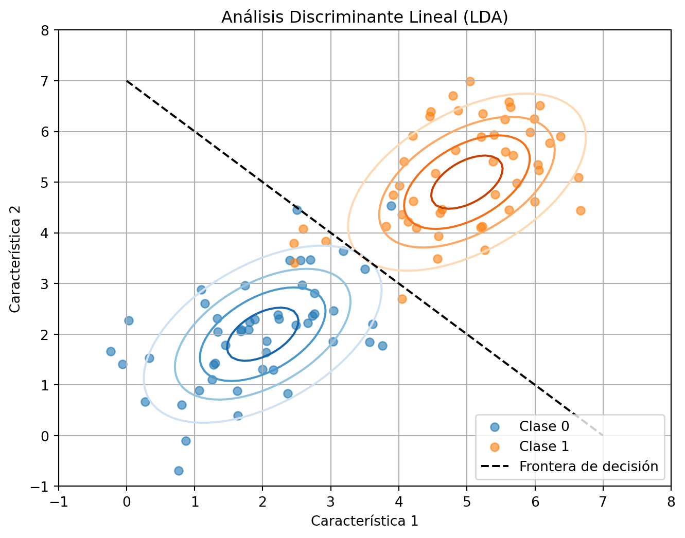
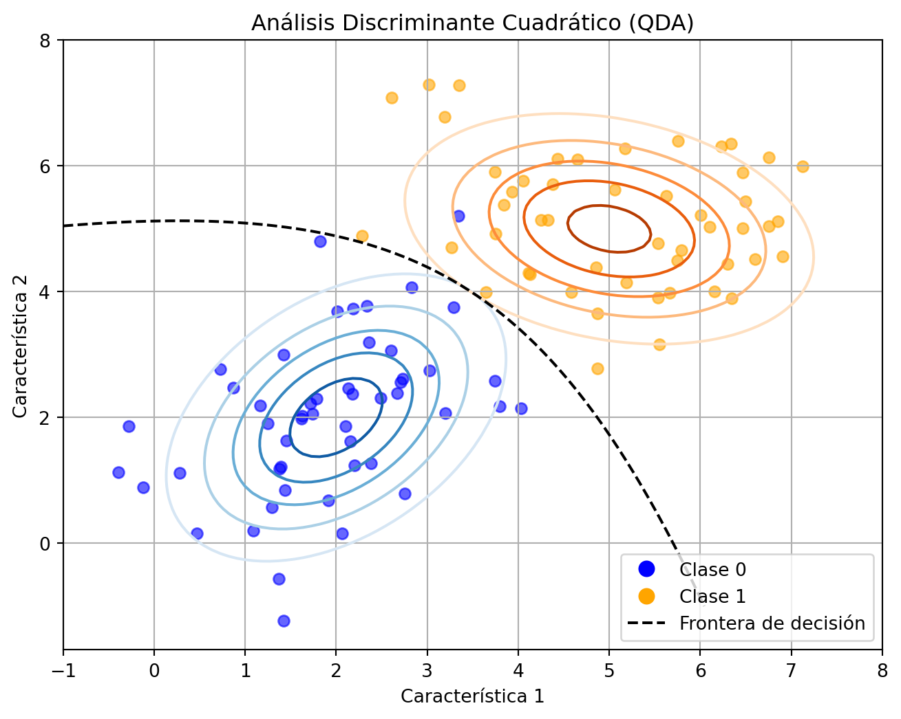

Modelos generativos
\[ \def\RR{\mathbb{R}} \def\media{\mathbb{E}} \def\xx{{\bf x}} \def\XX{{\bf X}} \def\TT{{\bf T}} \def\bftheta{\boldsymbol{\theta}} \def\bfeta{\boldsymbol{\eta}} \def\bfmu{\boldsymbol{\mu}} \def\bfSigma{\boldsymbol{\Sigma}} \def\bfone{\mathbf{1}} \def\argmin{\mathop{\mathrm{arg\,min\,}}} \def\argmax{\mathop{\mathrm{arg\,max\,}}} \]
Hasta ahora, hemos hablado principalmente sobre algoritmos de aprendizaje que modelan \(p(y|\xx; \bftheta)\); esto es, la distribución condicional de \(y\) dado \(\xx\) parametrizada por \(\bftheta\). El objetivo es aprender un clasificador que asocie a una entrada \(\xx\) una etiqueta. Nos referiremos a estos algoritmos como aprendizaje discriminativo.
En esta sección, hablaremos sobre algoritmos de aprendizaje generativo, en el cual se pone foco en \(p(\xx|y)\). Para entender la idea, consideremos un problema de clasificación en el que queremos aprender a distinguir entre elefantes (\(y=1\)) y perros (\(y=0\)), basado en algunas características del animal. Una posibilidad es construir un modelo de cómo son los elefantes, \(p(\xx|y=1)\), y un modelo separado para los perros, \(p(\xx|y=0)\), de tal manera que al final del día clasificar un nuevo animal dependa de si se parece más a los elefantes o más a los perros del conjunto de entrenamiento.
Después de modelar \(p(\xx|y)\) y también la distribución a priori \(p(y)\), la regla de Bayes permite obtener la distribución a posteriori:
\[ p(y|\xx) = \frac{p(\xx|y)p(y)}{p(\xx)}. \]
Observar que el denominador se obtiene mediante la regla \[p(\xx) = p(\xx|y=1)p(y=1) + p(\xx|y=0)p(y=0).\]
Sin embargo, al momento de hacer una predicción el denominador no es necesario ya que \[ \argmax_y p(y|\xx) = \argmax_y \frac{p(\xx|y)p(y)}{p(\xx)} = \argmax_y p(\xx|y)p(y). \]
1 Análisis discriminante gaussiano (GDA)
En este modelo generativo, se asume que \(p(\xx|y)\) se distribuye de acuerdo con una distribución normal multivariada. Hay dos casos: suponer las matrices de covarianza de los grupos iguales o distintas, lo cual da lugar a dos variantes, el Análisis Discriminante Lineal (LDA) y el Análisis Discriminante Cuadrático (QDA), respectivamente.
1.1 Análisis discriminante lineal (LDA)
El modelo es:
\[ \begin{align*} y &\sim \text{Bernoulli}(\phi) \\ \xx|y=0 &\sim \mathcal{N}(\bfmu_0, \bfSigma) \\ x|y=1 &\sim \mathcal{N}(\bfmu_1, \bfSigma) \end{align*} \]
Los parámetros del modelo son \(\phi\), \(\bfmu_0\), \(\bfmu_1\) y \(\bfSigma\).
En la figura se muestran datos de entrenamiento correspondientes a dos clases y las curvas de nivel de las gaussianas que generan ambas clases. Se puede observar que ambas gaussianas tienen la misma forma y orientación, ya que comparten una matriz de covarianza \(\bfSigma\) en común. También se muestra en la figura la línea recta que representa la frontera de decisión al momento de clasificar un nuevo dato. Dicha frontera corresponde a la ecuación \(p(y=1|\xx) = 0.5\).
1.1.1 Función de verosimilitud
Para un conjunto de datos \(\{\xx^{(i)}, y^{(i)}\}_{i=1}^n\) i.i.d., la función de log-verosimilitud es
\[ \begin{align*} \ell(\phi, \bfmu_0, \bfmu_1, \bfSigma) &= \log \prod_{i=1}^n p(\xx^{(i)}, y^{(i)}; \phi, \bfmu_0, \bfmu_1, \bfSigma)\\ &= \log \prod_{i=1}^n p(\xx^{(i)}| y^{(i)}; \phi, \bfmu_0, \bfmu_1, \bfSigma) p(y^{(i)}; \phi)\\ \end{align*} \]
Maximizando \(\ell\) con respecto a los parámetros, encontramos las estimaciones de máxima verosimilitud:
\[ \begin{align*} \hat{\phi} &= \frac{1}{n} \sum_{i=1}^n \bfone\{y^{(i)} = 1\} \\ \hat{\bfmu}_0 &= \frac{\sum_{i=1}^n \bfone\{y^{(i)} = 0\} \xx^{(i)}}{\sum_{i=1}^n \bfone\{y^{(i)} = 0\}} \\ \hat{\bfmu}_1 &= \frac{\sum_{i=1}^n \bfone\{y^{(i)} = 1\} \xx^{(i)}}{\sum_{i=1}^n \bfone\{y^{(i)} = 1\}} \\ \hat{\bfSigma} &= \frac{1}{n} \sum_{i=1}^n (\xx^{(i)} - \bfmu_{y^{(i)}})(\xx^{(i)} - \bfmu_{y^{(i)}})^T \end{align*} \]
1.1.2 Clasificador final
Una observación \(\xx\) se etiquetará con \(y=0\) si
\[ \begin{align*} \log\left(\frac{p(y=0|\xx)}{p(y=1|\xx)}\right)&>0\\ \log\left(\frac{p(\xx|y=0)p(y=0)}{p(\xx|y=1)p(y=1)}\right)&>0\\ \log\left(\frac{(1-\hat{\phi})\,\mathcal{N}(\xx|\hat{\bfmu}_0,\hat{\bfSigma})}{\hat{\phi}\,\mathcal{N}(\xx|\hat{\bfmu}_1,\hat{\bfSigma})}\right)&>0 \end{align*}. \]
Si se desarrolla el argumento del logaritmo en la expresión anterior, es decir el cociente de verosimilitudes, se puede deducir que la frontera de decisión es efectivamente una función lineal. ¿Ejercicio?
1.2 Análisis discriminante cuadrático (QDA)
El modelo es:
\[ \begin{align*} y &\sim \text{Bernoulli}(\phi) \\ \xx|y=0 &\sim \mathcal{N}(\bfmu_0, \bfSigma_0) \\ x|y=1 &\sim \mathcal{N}(\bfmu_1, \bfSigma_1) \end{align*} \]
Los parámetros del modelo son \(\phi\), \(\bfmu_0\), \(\bfmu_1\), \(\bfSigma_0\) y \(\bfSigma_1\).

En la figura se observa como en este caso, a diferencia de LDA, las gaussianas tienen diferente forma y orientación debido a que se asume que las matrices de covarianza no son iguales. Además, la frontera de decisión no es lineal.
1.2.1 Función de verosimilitud
Para un conjunto de datos \(\{\xx^{(i)}, y^{(i)}\}_{i=1}^n\) i.i.d., la función de log-verosimilitud es
\[ \ell(\phi, \bfmu_0, \bfmu_1, \bfSigma_0,\bfSigma_1) = \log \prod_{i=1}^n p(\xx^{(i)}| y^{(i)}; \phi, \bfmu_0, \bfmu_1, \bfSigma_1,\bfSigma_2) p(y^{(i)}; \phi). \]
Los estimadores de máxima verosimilitud de \(\phi\), \(\bfmu_0\) y \(\bfmu_1\) son idénticos al que se obtiene en LDA. Para las matrices de covarianza, resulta
\[ \hat{\bfSigma}_0 = \frac{\sum_{i=1}^n \bfone\{y^{(i)}=0\}(\xx^{(i)} - \hat{\bfmu}_0)(\xx^{(i)} - \hat{\bfmu}_0)^T}{\sum_{i=1}^n\bfone\{y^{(i)}=0\}} \]
\[ \hat{\bfSigma}_1 = \frac{\sum_{i=1}^n \bfone\{y^{(i)}=1\}(\xx^{(i)} - \hat{\bfmu}_1)(\xx^{(i)} - \hat{\bfmu}_1)^T}{\sum_{i=1}^n\bfone\{y^{(i)}=1\}} \]
1.2.2 Clasificador final
Una observación \(\xx\) se etiquetará con \(y=0\) si
\[\log\left(\frac{(1-\hat{\phi})\,\mathcal{N}(\xx|\hat{\bfmu}_0,\hat{\bfSigma}_0)}{\hat{\phi}\,\mathcal{N}(\xx|\hat{\bfmu}_1,\hat{\bfSigma}_1)}\right)>0.\]
En este caso, el desarrollo del cociente de verosimilitudes permite deducir que la frontera de decisión es una función cuadrática. ¿Ejercicio?
2 Naive Bayes
En GDA, las características \(\xx\) se asumen continuas. Ahora veremos un método de aprendizaje generativo en el cual las características toman valores discretos.
Por ejemplo, consideremos la construcción de un filtro de spam para correos electrónicos, que defina si son o no spam, en base a las palabras que contiene. De esta manera, el vector de características tendrá longitud igual a la cantidad de palabras en un diccionario. En particular, si un correo contiene la \(j\)-ésima palabra del diccionario, se define \(x_j=1\); de lo contrario, \(x_j=0\). En consecuencia, una posible observación sería de la forma
\[ \xx=(1,0,0,\cdots,1,\cdots,0)^T, \]
en la cual los valores no nulos representan las palabras que contiene dicho correo. Ahora bien, hay un problema con esta situación. Si el diccionario tiene 50000 palabras, entonces modelar \(p(\xx|y)\) implica determinar explícitamente la distribución para los \(2^{5000}\) posibles resultados, lo cual deriva $2^{50000}-1 parámetros.
Para modelar \(p(x|y)\), por lo tanto, haremos una suposición muy fuerte, denominada suposición de Naive Bayes, que consiste en asumir que los \(x_i\) son condicionalmente independientes dado \(y\). Por supuesto que esto es ingenuo, pues implica que conocer la presencia o no de una determinada palabra no afecta la creencia sobre la presencia o no de otra palabra. Esto es, asumir que \[p(x_i|y)=p(x_i|y,x_j),\quad \forall i\neq j.\]
Así, si \(\XX\in\{0,1\}^p\), es fácil ver que la suposición de Naive Bayes implica que
\[p(x_1, \ldots, x_{50000}|y) = \prod_{i=1}^p p(x_j| y). \]
Esta última igualdad permite derivar en un método de clasificación, asumiendo distribuciones para cada \(p(x_i|y)\). Para el ejemplo anterior, la alternativa más conveniente es asumir que cada una de ellas es una distribución Bernoulli. Desarrollaremos este caso más en detalle, pero antes es importante mencionar que hay diferentes modelos, incluso para el caso en que \(\XX\) sea continua.
2.1 Tipos de clasificadores Naive Bayes
No existe solo un tipo de clasificador Naïve Bayes. Los tipos más comunes se diferencian según las distribuciones de los valores de las características. Algunos de estos son:
Naive Bayes Gaussiano: Este es un tipo de clasificador Naïve Bayes que se utiliza con distribuciones gaussianas, es decir, distribuciones normales y variables continuas. Este modelo se ajusta encontrando la media y la desviación estándar de cada clase.
Naive Bayes Multinomial: Este tipo de clasificador Naïve Bayes asume que las características provienen de distribuciones multinomiales. Esta variante es útil cuando se trabaja con datos discretos, como conteos de frecuencia, y se aplica típicamente en casos de uso de procesamiento de lenguaje natural, como la clasificación de spam.
Naïve Bayes Bernoulli: Esta es otra variante del clasificador Naïve Bayes, que se utiliza con variables booleanas, es decir, variables con dos valores, como Verdadero y Falso o 1 y 0.
2.1.1 Naive Bayes Bernoulli
Las suposiciones son:
\[y\sim\text{Bernoulli}(\phi),\] \[x_j|y=0\sim\text{Bernoulli}(\phi_{j|y=0}),\] \[x_j|y=1\sim\text{Bernoulli}(\phi_{j|y=1}),\]
Los parámetros del modelo son \[\phi=p(y=1),\quad \phi_{j|y=0}=p(x_j=1|y=0),\quad \phi_{j|y=1}=p(x_j=1|y=1).\]
2.1.1.1 Función de verosimilitud
Para un conjunto de datos \(\{\xx^{(i)}, y^{(i)}\}_{i=1}^n\) i.i.d., la función de verosimilitud es \[ \mathcal{L}(\phi, \phi_{j|y=0}, \phi_{j|y=1}) = \prod_{i=1}^n p(\xx^{(i)}, y^{(i)}) \]
Los estimadores de máxima verosimilitud resultan:
\[\phi = \frac{\sum_{i=1}^n \bfone\{y^{(i)} = 1\}}{n},\] \[\phi_{j|y=1} = \frac{\sum_{i=1}^n \bfone\{\xx_j^{(i)} = 1 \land y^{(i)} = 1\}}{\sum_{i=1}^n \bfone\{y^{(i)} = 1\}},\] \[\phi_{j|y=0} = \frac{\sum_{i=1}^n \bfone\{\xx_j^{(i)} = 1 \land y^{(i)} = 0\}}{\sum_{i=1}^n \bfone\{y^{(i)} = 0\}}.\]
A pesar de que pueda parecer engorroso a simple vista, estas estimaciones tienen una interpretación muy natural. Por ejemplo, \(\phi_{j|y=1}\) es simplemente la fracción de correos etiquetados como spam (\(y=1\)) en los que aparece la palabra \(j\).